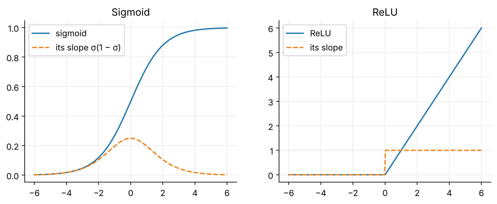
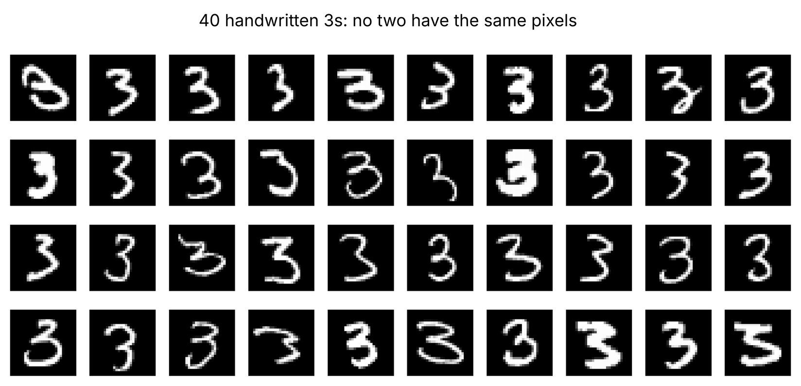

Practice · A network in Python
A neural network in NumPy, line by line.
A complete, runnable notebook for Part 1. Compute a neuron by hand, plot sigmoid and ReLU, load the MNIST digits, build the 784 → 16 → 16 → 10 network, count its 13,002 parameters and run a forward pass. Only NumPy and Matplotlib are needed. Hover over (or tap) any line of code to see what it does.
1 Hover over or tap any numbered line of code to highlight its explanation. Every output and chart below was produced by running this exact notebook.
1Import the libraries
NumPy for arrays and maths, Matplotlib for pictures and charts. No deep-learning library: every step is written out by hand.
- %config InlineBackend.figure_format = "retina"1
- import numpy as np2
- import matplotlib.pyplot as plt3
-
- plt.rcParams["figure.figsize"] = (7, 4)4
- plt.rcParams["axes.spines.top"] = False5
- plt.rcParams["axes.spines.right"] = False5
- plt.rcParams["axes.grid"] = True6
- plt.rcParams["grid.color"] = "#ececec"6
2One neuron by hand
The spam neuron of Exercise 1: each word present gives the input 1, absent gives 0. The neuron computes $\sigma(w_1x_1 + w_2x_2 + w_3x_3 + w_4x_4 + b)$.
- def sigmoid(z):1
- return 1 / (1 + np.exp(-z))2
-
- words = ["prize", "money", "dear", "win"]3
- w = np.array([2.0, 1.5, -1.0, 1.0])4
- b = -1.55
-
- x = np.array([0, 1, 1, 0])6
- z = w @ x + b7
- print("weighted sum + bias:", z, " sigma:", round(sigmoid(z), 2))8
- print("spam?", sigmoid(z) >= 0.5)9
-
- x2 = np.array([1, 1, 1, 0])10
- print("with 'prize':", round(sigmoid(w @ x2 + b), 2))11
weighted sum + bias: -1.0 sigma: 0.27 spam? False with 'prize': 0.73
3Activation functions
Sigmoid squishes into 0 … 1; ReLU keeps positive numbers and turns negative ones into 0. The dashed lines are the slopes: the sigmoid’s is never above 0.25.
- z = np.linspace(-6, 6, 300)1
- s = sigmoid(z)2
- relu = np.maximum(0, z)3
-
- fig, ax = plt.subplots(1, 2, figsize=(10, 3.5))4
- ax[0].plot(z, s, label="sigmoid")5
- ax[0].plot(z, s * (1 - s), "--", label="its slope σ(1 − σ)")6
- ax[0].legend(); ax[0].set_title("Sigmoid")6
- ax[1].plot(z, relu, label="ReLU")7
- ax[1].plot(z, (z > 0).astype(float), "--", label="its slope")8
- ax[1].legend(); ax[1].set_title("ReLU")8
- plt.show()9
- print("largest sigmoid slope:", (s * (1 - s)).max().round(3))10

largest sigmoid slope: 0.25
4Load the handwritten digits
MNIST: 70,000 pictures of 28 × 28 pixels. Each picture becomes a row of 784 numbers between 0 (black) and 1 (white).
- import gzip, os, urllib.request1
-
- URL = "https://raw.githubusercontent.com/fgnt/mnist/master/"2
-
- def load(name, offset):3
- if not os.path.exists(name):4
- urllib.request.urlretrieve(URL + name, name)4
- with gzip.open(name) as f:5
- return np.frombuffer(f.read(), np.uint8, offset=offset)6
-
- X_train = load("train-images-idx3-ubyte.gz", 16).reshape(-1, 784) / 2557
- y_train = load("train-labels-idx1-ubyte.gz", 8)8
- X_test = load("t10k-images-idx3-ubyte.gz", 16).reshape(-1, 784) / 2559
- y_test = load("t10k-labels-idx1-ubyte.gz", 8)9
- print(X_train.shape, y_train.shape, X_test.shape, y_test.shape)10
(60000, 784) (60000,) (10000, 784) (10000,)
- threes = X_test[y_test == 3][:40]1
- fig, axes = plt.subplots(4, 10, figsize=(10, 4.2))2
- for img, ax in zip(threes, axes.ravel()):3
- ax.imshow(img.reshape(28, 28), cmap="gray")4
- ax.axis("off")5
- plt.suptitle("40 handwritten 3s: no two have the same pixels")6
- plt.show()6
-
- print("one picture as numbers (rows 10 to 13, columns 8 to 20):")7
- print(np.round(threes[0].reshape(28, 28)[10:14, 8:20], 1))7

one picture as numbers (rows 10 to 13, columns 8 to 20): [[0. 0. 0. 0. 0. 0.2 0.9 1. 1. 0.3 0. 0. ] [0. 0.4 0.7 0.3 0.3 0.3 0.6 1. 1. 0.5 0. 0. ] [0.2 1. 1. 1. 1. 1. 1. 1. 1. 0.9 0.3 0.1] [0.1 0.9 1. 1. 1. 1. 1. 1. 1. 1. 1. 1. ]]
5Build the 784 → 16 → 16 → 10 network
One weight matrix and one bias vector per connection between layers. Row k of a weight matrix holds the weights of neuron k. All start as small random numbers.
- sizes = [784, 16, 16, 10]1
- rng = np.random.default_rng(0)2
-
- W = [rng.normal(0, 1 / np.sqrt(n_in), (n_out, n_in))3
- for n_in, n_out in zip(sizes[:-1], sizes[1:])]3
- b = [np.zeros(n_out) for n_out in sizes[1:]]4
-
- for i, (Wi, bi) in enumerate(zip(W, b)):5
- print(f"layer {i+1}: W {Wi.shape}, b {bi.shape}, parameters {Wi.size + bi.size:,}")5
- print("total parameters:", f"{sum(Wi.size + bi.size for Wi, bi in zip(W, b)):,}")6
layer 1: W (16, 784), b (16,), parameters 12,560 layer 2: W (16, 16), b (16,), parameters 272 layer 3: W (10, 16), b (10,), parameters 170 total parameters: 13,002
6The forward pass
Each layer is $a^{(1)} = \sigma\big(W a^{(0)} + b\big)$. Three matrix multiplications, three sigmoids, and the 784 pixels have become 10 numbers.
- def forward(x):1
- a = x2
- for Wi, bi in zip(W, b):3
- a = sigmoid(a @ Wi.T + bi)4
- return a5
-
- out = forward(X_test[0])6
- print("label:", y_test[0])7
- print("outputs:", np.round(out, 2))8
- print("answer:", out.argmax())9
label: 7 outputs: [0.56 0.41 0.58 0.65 0.54 0.59 0.61 0.57 0.69 0.28] answer: 8
7How bad is a random network?
The cost of one example: $C = \sum_j (a_j - y_j)^2$, where $y$ is 1 for the right digit and 0 for the others. Then the accuracy over all 10,000 test pictures.
- y = np.zeros(10); y[y_test[0]] = 11
- cost = ((out - y) ** 2).sum()2
- print("cost of this example:", round(cost, 2))3
-
- all_out = forward(X_test)4
- acc = (all_out.argmax(axis=1) == y_test).mean()5
- Y = np.eye(10)[y_test]6
- print(f"accuracy of random weights: {acc:.1%}")7
- print("average cost:", ((all_out - Y) ** 2).sum(axis=1).mean().round(2))8
cost of this example: 3.0 accuracy of random weights: 9.7% average cost: 3.05
8What you built
| Piece | In code |
|---|---|
| neuron | sigmoid(w @ x + b) |
| layer | sigmoid(a @ W.T + b) |
| network | a loop over layers |
| parameters | 13,002 numbers in W and b |
| cost | ((out - y) ** 2).sum() |
The network is a function with 13,002 knobs, all random. Next notebook: turn the knobs with gradient descent and backpropagation.